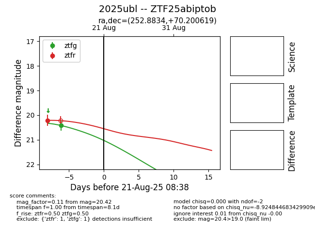

Target 2025ubl at 2025-08-21 08:38, see:
FINK: fink-portal.org/ZTF25abiptob
Lasair: lasair-ztf.lsst.ac.uk/objects/ZTF25abiptob
ALeRCE: alerce.online/object/ZTF25abiptob
TNS: wis-tns.org/object/2025ubl
YSE: ziggy.ucolick.org/yse/transient_detail/2025ubl
alt names
ZTF25abiptob (ztf,alerce)
2025ubl (tns,yse)
coordinates:
equatorial (ra, dec) = (252.8834,+70.20062)
galactic (l, b) = (101.8267,+35.42599)
photometry
last ztfg=20.42, ztfr=20.21
1 ztfg, 1 ztfr detections
